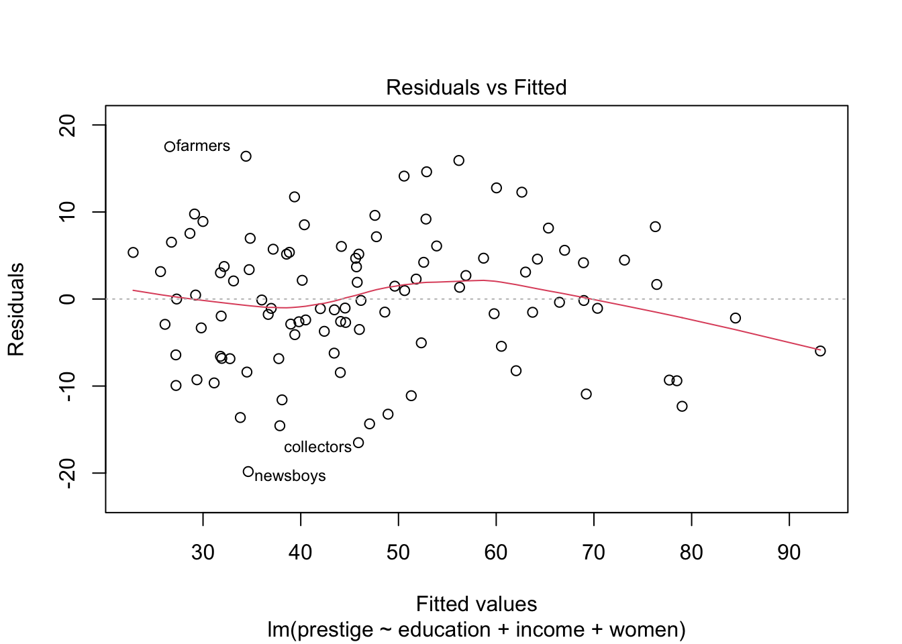
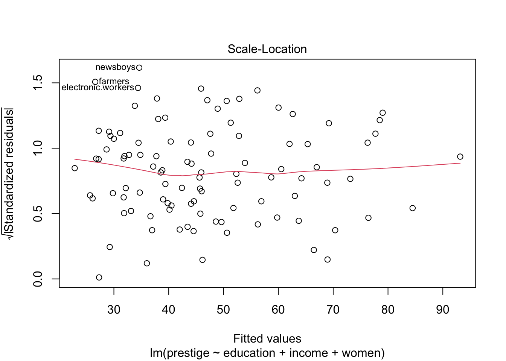
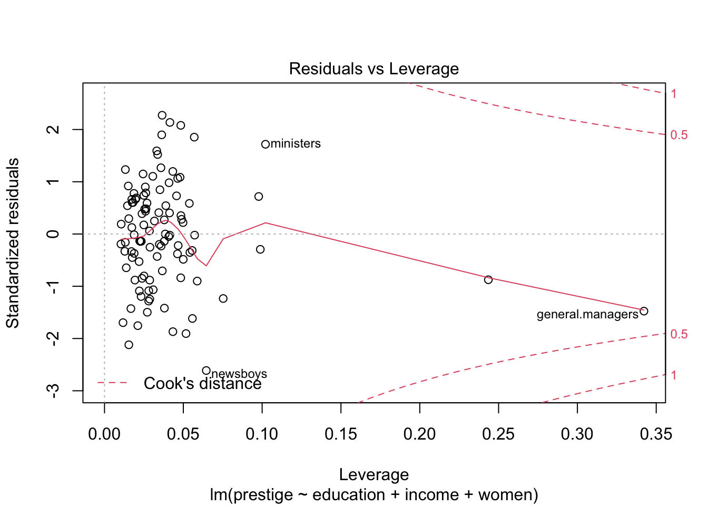
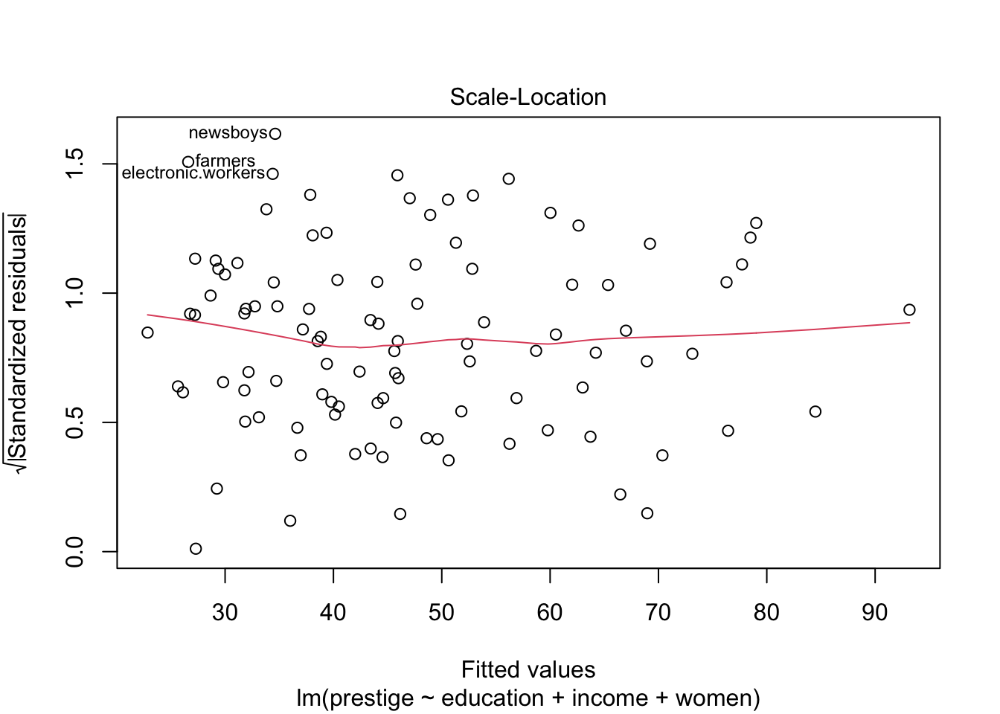
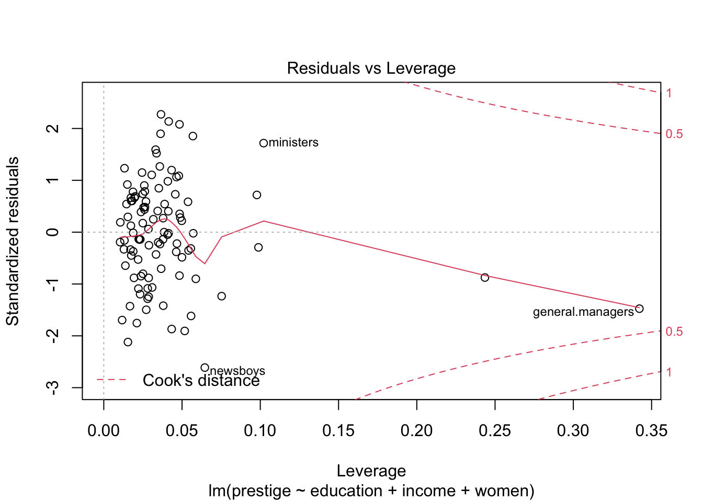
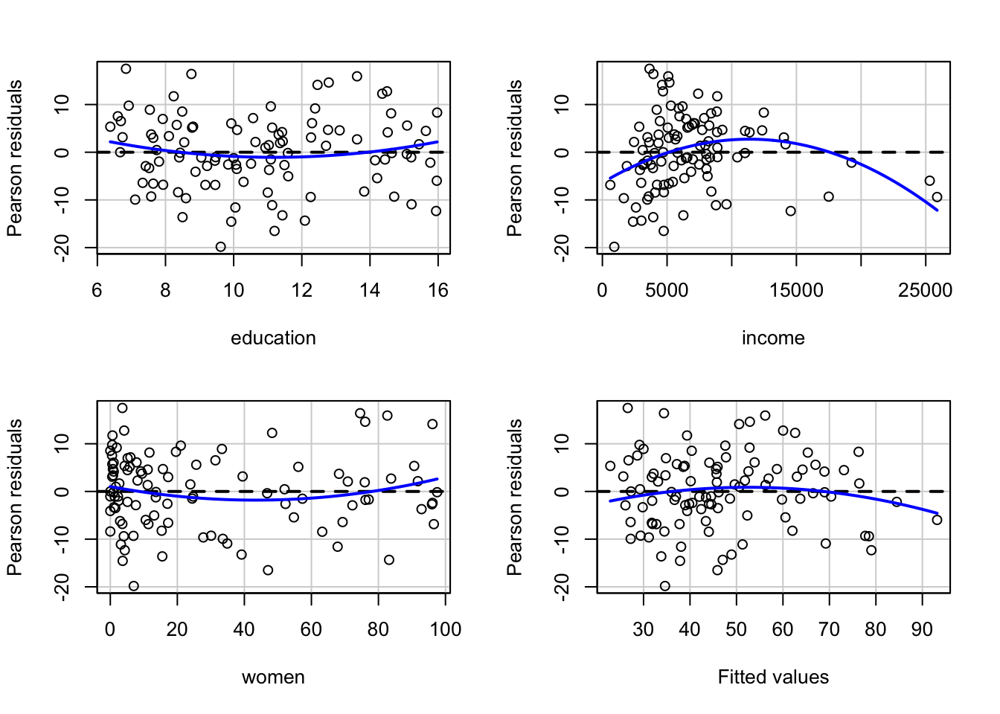
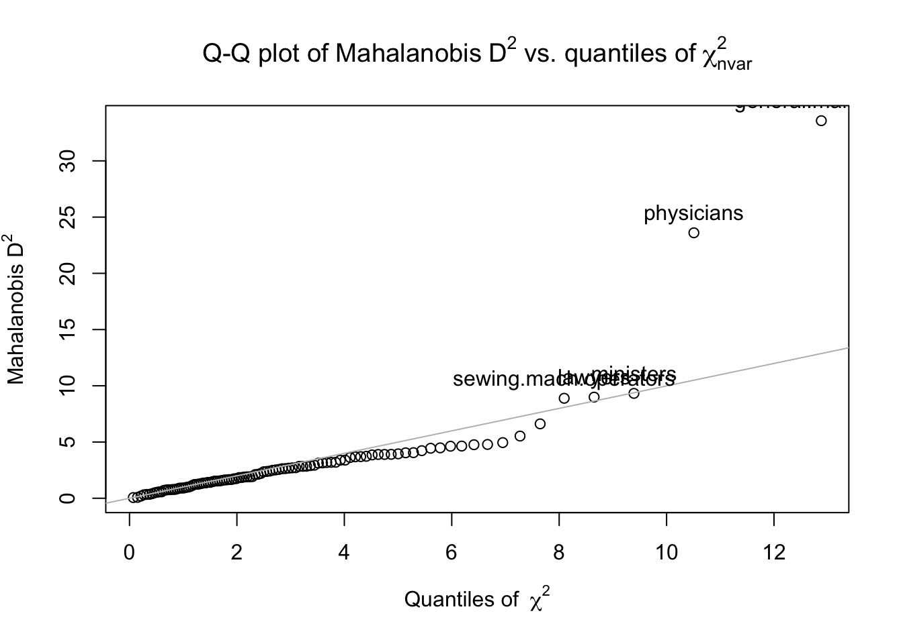
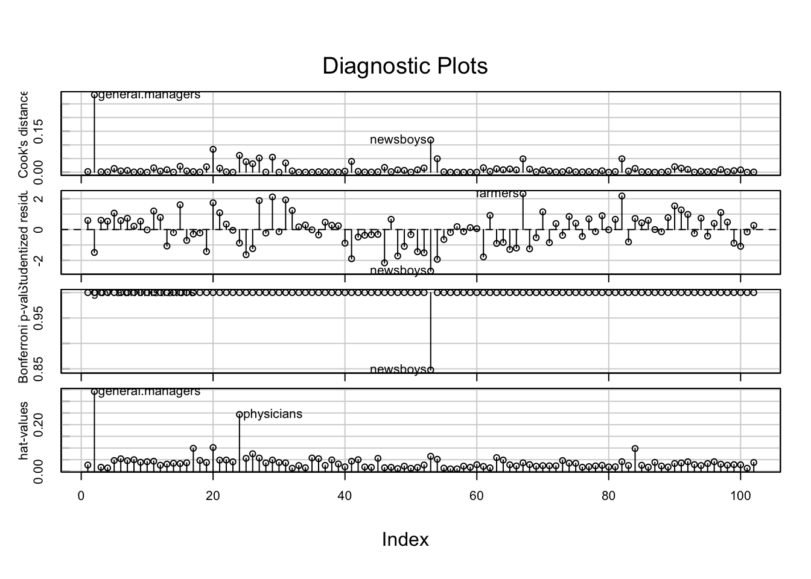
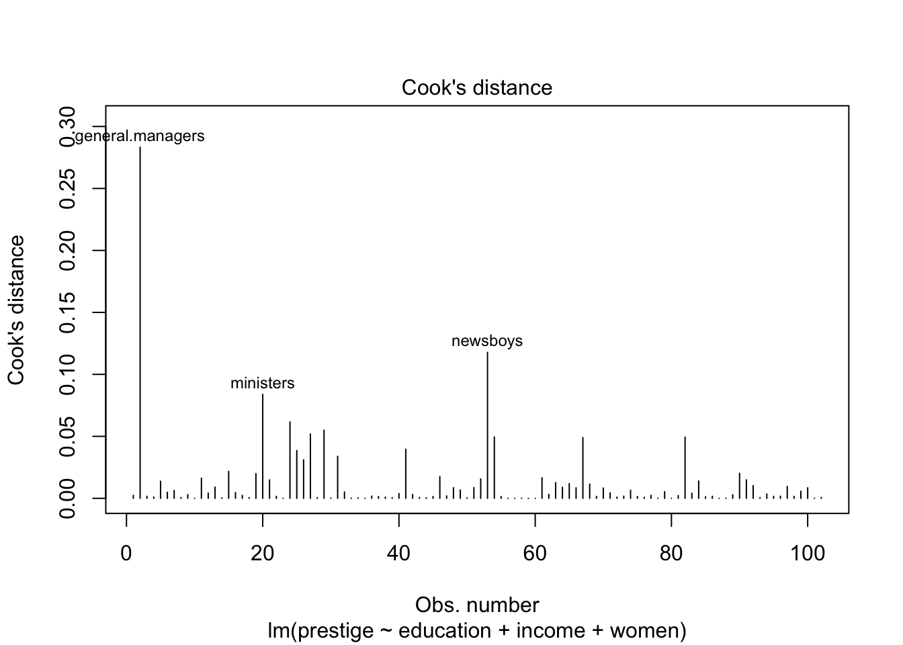
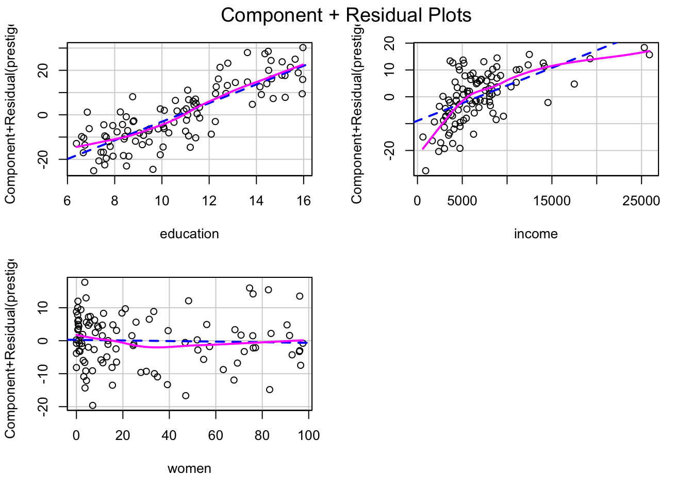

Lab 09: Multiple Regression
Mar 23, 2022
โหลดแพ็คเกจที่จะต้องใช้ในแบบฝึกหัดนี้
library(psych)
library(car)
library(carData)1. Multiple Regression
Linear model
ชุดข้อมูล Prestige จากแพ็คเกจ carData
education = ระยะเวลาการศึกษาเฉลี่ยของผู้ประกอบอาชีพ
income =
women
prestige
census
type
# Import data
dat <- carData::Prestige
str(dat)## 'data.frame': 102 obs. of 6 variables:
## $ education: num 13.1 12.3 12.8 11.4 14.6 ...
## $ income : int 12351 25879 9271 8865 8403 11030 8258 14163 11377 11023 ...
## $ women : num 11.16 4.02 15.7 9.11 11.68 ...
## $ prestige : num 68.8 69.1 63.4 56.8 73.5 77.6 72.6 78.1 73.1 68.8 ...
## $ census : int 1113 1130 1171 1175 2111 2113 2133 2141 2143 2153 ...
## $ type : Factor w/ 3 levels "bc","prof","wc": 2 2 2 2 2 2 2 2 2 2 ...prestige.lm <- lm(prestige ~ education + income + women, data = dat)
summary(prestige.lm)##
## Call:
## lm(formula = prestige ~ education + income + women, data = dat)
##
## Residuals:
## Min 1Q Median 3Q Max
## -19.8246 -5.3332 -0.1364 5.1587 17.5045
##
## Coefficients:
## Estimate Std. Error t value Pr(>|t|)
## (Intercept) -6.7943342 3.2390886 -2.098 0.0385 *
## education 4.1866373 0.3887013 10.771 < 2e-16 ***
## income 0.0013136 0.0002778 4.729 7.58e-06 ***
## women -0.0089052 0.0304071 -0.293 0.7702
## ---
## Signif. codes: 0 '***' 0.001 '**' 0.01 '*' 0.05 '.' 0.1 ' ' 1
##
## Residual standard error: 7.846 on 98 degrees of freedom
## Multiple R-squared: 0.7982, Adjusted R-squared: 0.792
## F-statistic: 129.2 on 3 and 98 DF, p-value: < 2.2e-16Residual plots
plot(prestige.lm) 

residualPlots(prestige.lm)
## Test stat Pr(>|Test stat|)
## education 1.3268 0.1877
## income -4.2815 4.366e-05 ***
## women 1.4427 0.1523
## Tukey test -1.4169 0.1565
## ---
## Signif. codes: 0 '***' 0.001 '**' 0.01 '*' 0.05 '.' 0.1 ' ' 12. Detecting Extreme Cases
Leverage
เลฟเวอเรจ (leverage) คือ กรณีที่ค่าของตัวแปรทำนาย Xi นั้นมีระยะห่างจากค่าเฉลี่ย \(\bar{X}\) อย่างมาก (ไม่เกี่ยวกับค่า Y) ในแบบฝึกหัดที่ผ่าน ๆ มา เราได้ใช้วิธีแปลงคะแนนค่า x เป็นคะแนนมาตรฐาน (z score) เพื่อดูว่าค่านั้นสุดโต่งหรือไม่ นี่คือแนวคิดของการหา univariate outlier คือพิจารณาค่าสุดโต่งของตัวแปรเดียว (ไม่พิจารณาร่วมกับตัวแปรอื่น) หากเรานำค่า z ที่ได้ไปยกกำลังสอง เราจะได้สูตรดังนี้
\[ Z^2_{X_i} = \bigg{(}\frac{X_i - \bar{X}}{s_{X}^2}\bigg{)}^2 \]
เนื่องจากค่า z ถูกยกกำลังสองจึงเป็นค่าทางบวกเสมอที่แสดงถึงความห่างของค่าคะแนน Xi จากค่าเฉลี่ยของตัวแปร X โดยปกติแล้วเราจะใช้เกณฑ์ที่ ±3 SD เป็นจุดตัดของค่าสุดโต่ง
แต่ในกรณีของการถดถอยพหุคูณ (multiple regression; MR) ค่าตัวแปร X ที่สุดโต่งอาจต้องพิจารณาร่วมกับตัวแปร X อื่น ๆ ด้วย เช่น คนที่สูง 180 อาจจะไม่เห็นค่าสุดโต่งในชุดข้อมูล แต่ผู้หญิงที่สูง 180 เป็นค่าที่มีเลฟเวอเรจสูง (พิจารณาตัวแปรเพศและความสูงร่วมกัน) เนื่องจากต้องพิจารณาหลายตัวแปรร่วมกันจึงเรียกว่าเป็น multivariate outlier โดยค่าสถิติที่ใช้พิจารณาก็พัฒนาต่อเนื่องมาจากสูตรด้านบนเป็นค่าที่เรียกว่า Mahalanobis distance
เราจะใช้คำสั่ง outlier(x, plot = TRUE, bad = 5, na.rm = TRUE) ในแพ็คเกจ psych
x คือ ชุดตัวแปร X
plot คือต้องการให้สร้างกราฟ QQ หรือไม่ (ค่าตั้งต้น = TRUE)
bad คือ ให้แสดงเคสที่มีปัญหาบนกราฟ (ค่าตั้งต้น = 5 ตัวที่มีปัญหามากที่สุด)
na.rm คือ ให้ลบข้อมูลที่มี missing ทิ้ง (ค่าตั้งต้น = TRUE)
predictors <- dat[c("education", "income", "women")]
dat$maha_dis <- psych::outlier(predictors)
head(dat)## education income women prestige census type maha_dis
## gov.administrators 13.11 12351 11.16 68.8 1113 prof 1.7323152
## general.managers 12.26 25879 4.02 69.1 1130 prof 33.5731939
## accountants 12.77 9271 15.70 63.4 1171 prof 0.7825381
## purchasing.officers 11.42 8865 9.11 56.8 1175 prof 0.4787457
## chemists 14.62 8403 11.68 73.5 2111 prof 3.6997050
## physicists 15.64 11030 5.13 77.6 2113 prof 4.4454380#calculate p value for Mahalanobis distance with Chi-square test with df = k- 1, where k = number of variables.
dat$maha_p <- pchisq(dat$maha_dis, df = 2, lower.tail = FALSE) # We only look for large MD. Therefore, only upper tail of distribution.
head(dat)## education income women prestige census type maha_dis maha_p
## gov.administrators 13.11 12351 11.16 68.8 1113 prof 1.7323152 4.205644e-01
## general.managers 12.26 25879 4.02 69.1 1130 prof 33.5731939 5.124761e-08
## accountants 12.77 9271 15.70 63.4 1171 prof 0.7825381 6.761982e-01
## purchasing.officers 11.42 8865 9.11 56.8 1175 prof 0.4787457 7.871214e-01
## chemists 14.62 8403 11.68 73.5 2111 prof 3.6997050 1.572604e-01
## physicists 15.64 11030 5.13 77.6 2113 prof 4.4454380 1.083142e-01dat[dat$maha_p < .001, ] # cases with p < .001 are considered outliers.## education income women prestige census type maha_dis maha_p
## general.managers 12.26 25879 4.02 69.1 1130 prof 33.57319 5.124761e-08
## physicians 15.96 25308 10.56 87.2 3111 prof 23.60481 7.486533e-06hat values
dat$hat <- hatvalues(prestige.lm)
head(dat)## education income women prestige census type maha_dis maha_p hat
## gov.administrators 13.11 12351 11.16 68.8 1113 prof 1.7323152 4.205644e-01 0.02695556
## general.managers 12.26 25879 4.02 69.1 1130 prof 33.5731939 5.124761e-08 0.34221178
## accountants 12.77 9271 15.70 63.4 1171 prof 0.7825381 6.761982e-01 0.01755182
## purchasing.officers 11.42 8865 9.11 56.8 1175 prof 0.4787457 7.871214e-01 0.01454398
## chemists 14.62 8403 11.68 73.5 2111 prof 3.6997050 1.572604e-01 0.04643466
## physicists 15.64 11030 5.13 77.6 2113 prof 4.4454380 1.083142e-01 0.05381816Distance
Distance คือ ระยะห่างของค่า Y แต่ละตัวจากค่า \(\hat{Y}\) (ค่า Y ทำนาย; predicted Y) นั่นก็คือค่า Y ที่ทำให้เกิดความคลาดเคลื่อนในการทำนายสูง (residual)
Studentized residual
dat$tr <- rstudent(prestige.lm)
head(dat)## education income women prestige census type maha_dis maha_p hat tr
## gov.administrators 13.11 12351 11.16 68.8 1113 prof 1.7323152 4.205644e-01 0.02695556 0.5901624
## general.managers 12.26 25879 4.02 69.1 1130 prof 33.5731939 5.124761e-08 0.34221178 -1.4848372
## accountants 12.77 9271 15.70 63.4 1171 prof 0.7825381 6.761982e-01 0.01755182 0.6014246
## purchasing.officers 11.42 8865 9.11 56.8 1175 prof 0.4787457 7.871214e-01 0.01454398 0.5397302
## chemists 14.62 8403 11.68 73.5 2111 prof 3.6997050 1.572604e-01 0.04643466 1.0646403
## physicists 15.64 11030 5.13 77.6 2113 prof 4.4454380 1.083142e-01 0.05381816 0.5840069outlierTest(prestige.lm)## No Studentized residuals with Bonferroni p < 0.05
## Largest |rstudent|:
## rstudent unadjusted p-value Bonferroni p
## newsboys -2.694442 0.0083101 0.84763Influence
Influence คือ อิทธิพลที่เคสนั้นมีต่อสมการถดถอย นั่นคือ ถ้าเคสนี้หายไปค่า b จะเปลี่ยนไปเท่าใด
Cook’s distance
dat$cook <- cooks.distance(prestige.lm)
head(dat)## education income women prestige census type maha_dis maha_p hat tr cook
## gov.administrators 13.11 12351 11.16 68.8 1113 prof 1.7323152 4.205644e-01 0.02695556 0.5901624 0.002428267
## general.managers 12.26 25879 4.02 69.1 1130 prof 33.5731939 5.124761e-08 0.34221178 -1.4848372 0.283269734
## accountants 12.77 9271 15.70 63.4 1171 prof 0.7825381 6.761982e-01 0.01755182 0.6014246 0.001626121
## purchasing.officers 11.42 8865 9.11 56.8 1175 prof 0.4787457 7.871214e-01 0.01454398 0.5397302 0.001082658
## chemists 14.62 8403 11.68 73.5 2111 prof 3.6997050 1.572604e-01 0.04643466 1.0646403 0.013779919
## physicists 15.64 11030 5.13 77.6 2113 prof 4.4454380 1.083142e-01 0.05381816 0.5840069 0.004882702Visualize
influenceIndexPlot(prestige.lm)
3. Assumption Violation
Nonlinearity
crPlots(prestige.lm)
ncvTest(prestige.lm)## Non-constant Variance Score Test
## Variance formula: ~ fitted.values
## Chisquare = 0.2490143, Df = 1, p = 0.61777Non-Normality
car::qqPlot(prestige.lm)## newsboys farmers
## 53 67Heteroscedasticity
spreadLevelPlot(prestige.lm)
##
## Suggested power transformation: 1.12183Nonindependence
Use MLM
Multi-colinearity
vif(prestige.lm)## education income women
## 1.845165 2.282038 1.526593